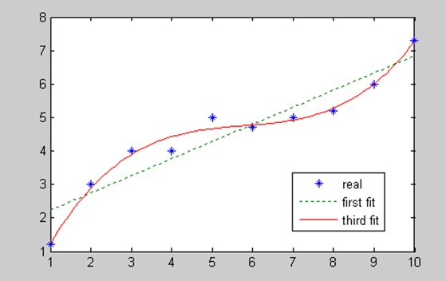

关于该课题的说明以及分析数据的MATLAB代码
当今手机行业，可谓百家争鸣，各大企业大放异彩。在这风云变幻的手机行业，背后有着怎样的发展规律呢?通过分析大数据，我们可以得到一些结论。尽管由于各种原因，我们的分析结果未必尽然合理，但可以作为参考，让我们客观的了解手机行业的发展情况以及其发展趋势。
在分析的过程中，有一些假设的条件，而结论的得出，是建立在假设之上的。我们排除某些例如重大技术变革等特殊的情况，然后，根据分析数据的结果去做一些预测。
一、数学模型为:
★多项式曲线拟合
考虑如下 x-y 一组实验数据：
x=[1, 2, 3, 4, 5, 6, 7, 8, 9, 10]
y=[1.2, 3, 4, 4, 5, 4.7, 5, 5.2, 6, 7.2]
注： y(x) = x3 - 2x2 - 5 , In MATLAB y = [1 - 2 0 - 5]
一次多项式拟合：
p1 = polyfit(x,y,1)
n 三次多项式拟合：
p3 = polyfit(x,y,3)
plot 原始数据、一次拟合曲线和三次拟合曲线
x2=1:0.1:10;
y1=polyval(p1,x2) y3=polyval(p3,x2)
plot( x, y, ’*’, x2, y1, ‘:’, x2, y3)

由图可见，三次拟合结果较好。因此，我们采用三次多项式拟合。
在分析中，我们假设手机配置的升级过程和手机价格的变化过程是有一定规律的，因此，用三次多项式拟合后，可以做出接近其变化规律的曲线，将曲线往后延伸，便可以对未来的发展趋势做出相应的预测。
二、分析数据的MATLAB代码
画折线图以及做三次多项式拟合的代码如下：
三、做预测时的假设条件为:
1.手机的配置升级和更新换代是有一定规律的；
2.手机行业没有什么重大事件，导致该行业发生很大的波动；
3.集成电路芯片以及内存的发展仍然遵循摩尔定律，科学技术领域还没有特殊的重大突破情况。
4.因各品牌的旗舰机代表了其最新的成果，各手机品牌的旗舰机的发展趋势就代表着整个手机行业的发展趋势。因此，我们只分析每个品牌的旗舰机型的配置的发展趋势，至于中低端机型，我们暂不做分析。